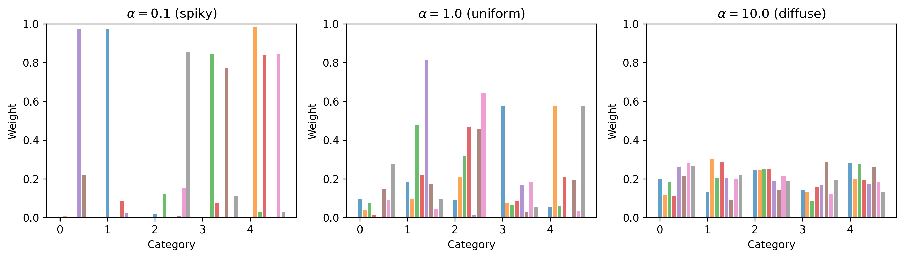
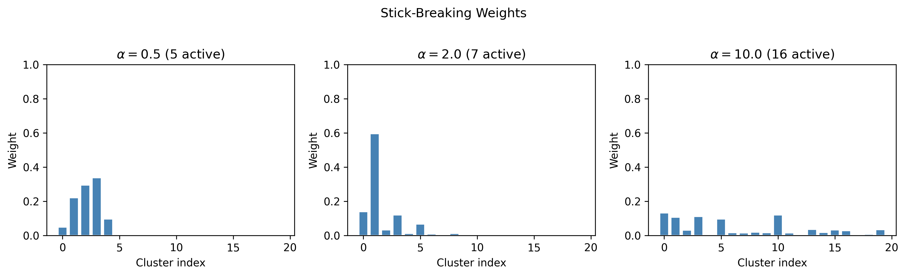
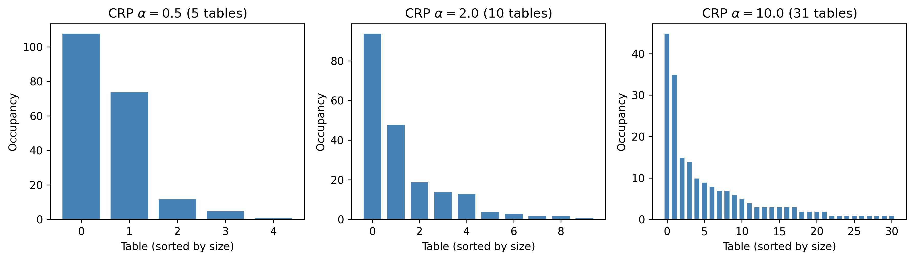
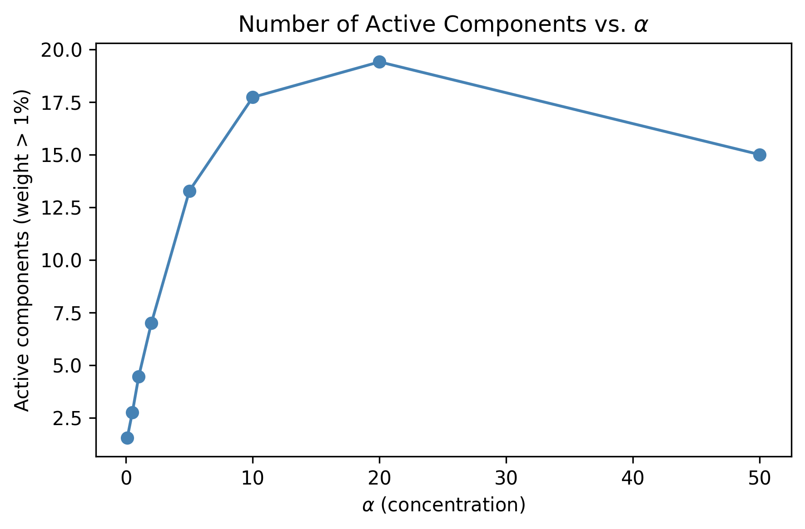
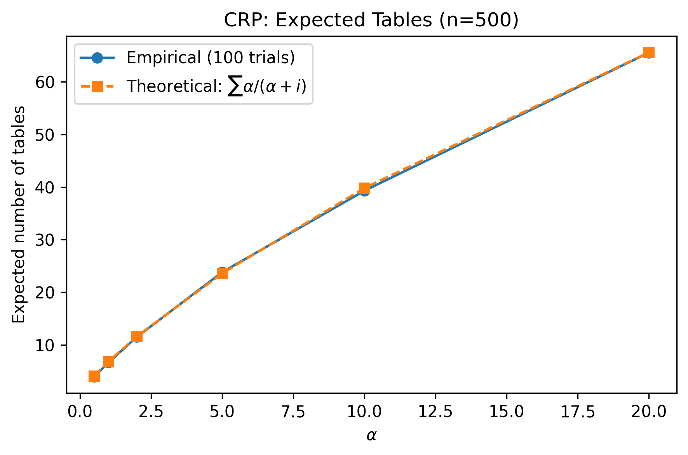

You have a data set with clusters, but you don’t know how many clusters there are. You could try K-means with K=3, then K=5, then K=10, and argue with your colleagues about which is “right.” Or you could let the data tell you—automatically, probabilistically, with honest uncertainty about the answer.
That is the promise of Bayesian nonparametric models. The word “nonparametric” is one of the most misleading terms in statistics. It does not mean “no parameters.” It means the number of parameters grows with the data. A linear regression has two parameters (slope and intercept) whether you have ten observations or ten million. A nonparametric model might use five effective parameters for a small data set and five hundred for a large one. The model’s complexity adapts to what the data can support.
This chapter introduces two flagship nonparametric methods. First, the Dirichlet Process Mixture Model (DPMM), which discovers clusters without you specifying K. Second, a connection back to the Gaussian Process you met in Chapter 7—because GPs are nonparametric too. By the end, you will have built a DPMM in PyMC that recovers the true number of clusters from synthetic data, and you will know when to reach for a nonparametric model versus when a simpler parametric model is the better choice.
Imports and setup
import pymc as pmimport arviz as azimport numpy as npimport pandas as pdimport matplotlib.pyplot as pltfrom numpy.random import default_rngfrom scipy import statsrng = default_rng(42)print(f"PyMC {pm.__version__}, ArviZ {az.__version__}")
PyMC 5.25.1, ArviZ 0.23.4
8.1 What Does “Nonparametric” Mean?
The confusion starts with the name. When most people hear “nonparametric,” they think of the Mann-Whitney U test or the Kolmogorov-Smirnov test—methods that make fewer distributional assumptions. Bayesian nonparametrics are a different animal entirely.
Here is the key distinction:
Parametric model: The number of parameters is fixed before you see the data. A linear regression with three predictors always has four parameters (three slopes plus intercept), regardless of whether your data set has 50 rows or 50,000 rows.
Nonparametric model: The number of effective parameters grows with the sample size \(n\). More data means more complexity is available—though the model only uses as much complexity as the data justify.
Think of it this way. A parametric model is a fixed-size box: you cram your data into it whether or not the data fit. A nonparametric model is an expandable container that grows as you add more items.
The Gaussian Process from Chapter 7 is nonparametric: for \(n\) data points, the GP uses an \(n \times n\) covariance matrix. Each new observation adds a new dimension. Similarly, the Dirichlet Process Mixture Model we will build in this chapter can, in principle, have infinitely many clusters—though the data will only ever “activate” a finite subset of them.
Why does this matter in practice? Because choosing the wrong number of clusters, the wrong polynomial degree, or the wrong number of mixture components can lead to either underfitting (missing real structure) or overfitting (finding structure that isn’t there). Nonparametric models sidestep that choice by letting the data decide.
8.2 Density Estimation: From Histograms to Dirichlet Processes
Before we dive into the theory, let’s ground the problem with a scenario you have probably encountered. You have a pile of numbers— maybe response times from a web server, or test scores from a classroom, or customer spending amounts—and you want to understand their distribution. Not just the mean or the standard deviation, but the full shape: Is it one bell curve? Two humps? A skewed tail?
The simplest approach is a histogram: chop the range into bins and count how many observations fall in each bin. The trouble is that the result depends heavily on bin width, and it is always choppy. A narrow bin width gives you noise; a wide bin width hides structure.
A step up is kernel density estimation (KDE): place a smooth bump (typically a Gaussian) at each data point and average them. KDE gives you a smooth curve, but it is essentially a nonparametric point estimate—there is no built-in uncertainty quantification. You get one line, not a range of plausible densities.
The next step is to model the density as a mixture of parametric distributions. A Gaussian mixture model (GMM) says: the data come from \(K\) Gaussian components, each with its own mean and variance. You estimate the component parameters and the mixing weights. This is powerful—but it forces you to choose \(K\) before fitting.
And how do you choose \(K\)? The frequentist answer is: try K=1, 2, 3, …, and use BIC, AIC, or cross-validation to pick the best one. But these give you a single number with no uncertainty. They cannot tell you “probably 3, but maybe 4.” The Bayesian nonparametric answer is the Dirichlet Process: a prior that places probability mass on an infinite number of potential components, then lets the posterior concentrate on however many the data actually need. You never have to specify \(K\)—the model figures it out and gives you a posterior distribution over the number of active clusters.
The histogram is choppy. The KDE is smooth but unimodal-looking in places where the components overlap. The true density reveals three distinct bumps. Our goal is to build a model that can recover this structure—without us telling it \(K=3\) in advance.
8.3 The Dirichlet Distribution
Before we can understand the Dirichlet Process, we need the Dirichlet distribution. Think of it as the multi-category generalization of the Beta distribution.
Recall that the Beta distribution produces a single number between 0 and 1—useful as a prior for a single probability. The Dirichlet distribution produces a vector of \(K\) numbers that are all non-negative and sum to 1—useful as a prior for a set of category probabilities (like the mixing weights in a mixture model).
The Dirichlet is parameterized by a concentration vector \(\boldsymbol{\alpha} = (\alpha_1, \ldots, \alpha_K)\). When all \(\alpha_k\) are equal to some scalar \(\alpha\), the distribution is symmetric, and the single parameter \(\alpha\) controls how “spiky” or “uniform” the resulting probability vector is:
Small \(\alpha\) (e.g., 0.1): The draws are spiky. Most weight concentrates on one or two categories. The rest are near zero.
\(\alpha = 1\): Uniform over the simplex. All probability vectors are equally likely.
Large \(\alpha\) (e.g., 100): The draws are nearly uniform across all categories. Every category gets roughly the same weight.
Let’s see this:
K =5# five categoriesfig, axes = plt.subplots(1, 3, figsize=(12, 3.5))alphas = [0.1, 1.0, 10.0]titles = [r"$\alpha = 0.1$(spiky)",r"$\alpha = 1.0$(uniform)",r"$\alpha = 10.0$(diffuse)"]for ax, alpha_val, title inzip(axes, alphas, titles): alpha_vec = np.full(K, alpha_val) samples = rng.dirichlet(alpha=alpha_vec, size=8)for i, s inenumerate(samples): ax.bar( np.arange(K) + i *0.1, s, width=0.08, alpha=0.7, ) ax.set_title(title) ax.set_xlabel("Category") ax.set_ylabel("Weight") ax.set_ylim(0, 1)plt.tight_layout()plt.show()

When \(\alpha\) is small, each draw from the Dirichlet assigns nearly all its probability mass to just one or two categories. This is exactly the behavior we want for mixture weights when we believe only a few components are “active.” When \(\alpha\) is large, every component gets equal weight—not what we want if we’re trying to discover a small number of clusters.
We can also use scipy.stats.dirichlet to compute densities and draw samples:
from scipy.stats import dirichletalpha_vec = np.array([2.0, 5.0, 1.0, 0.5])rv = dirichlet(alpha=alpha_vec)# Draw five samplessamples = rv.rvs(size=5, random_state=42)print("Samples (each row sums to 1):")print(np.round(samples, 3))print("Row sums:", samples.sum(axis=1))
The key intuition: the Dirichlet tells you “how to allocate a fixed budget (total probability = 1) across \(K\) buckets, with \(\alpha\) controlling how evenly you spread it.”
Why does this matter for mixture models? The mixing weights in a GMM must sum to 1 (they are probabilities of belonging to each cluster). The Dirichlet distribution is the natural prior for these weights. When \(K\) is fixed, a \(\text{Dirichlet}(\alpha, \ldots, \alpha)\) prior on the weights says “I expect roughly equal clusters” (large \(\alpha\)) or “I expect most data in a few clusters” (small \(\alpha\)). The next section takes this idea and removes the constraint that \(K\) is fixed.
8.4 The Dirichlet Process
Now for the conceptual leap. What if \(K = \infty\)? That is, what if you want a prior over probability distributions that can have infinitely many categories, without fixing \(K\) in advance?
The Dirichlet Process (DP) is the answer. It is a distribution over distributions. A draw from a DP is itself a discrete probability distribution—one that can have infinitely many atoms, though in practice only finitely many have appreciable weight.
Here is an analogy. Imagine you are a radio DJ with an infinite playlist. You can play any song ever recorded, but in practice you have favorites. A draw from the DP is like your playlist distribution: infinitely many songs are possible, but tonight you will only play 20 or so, and most of the airtime goes to the top 5.
A DP is parameterized by two things:
\(\alpha\) (concentration parameter): Controls how many components are likely to be “active.” Small \(\alpha\) means few components; large \(\alpha\) means many.
\(G_0\) (base distribution): The “centering” distribution. Each atom’s location is drawn from \(G_0\). For a mixture of Gaussians, \(G_0\) might be a Normal-Inverse-Gamma prior on the mean and variance.
8.4.1 The Stick-Breaking Construction
The most intuitive way to understand the DP is through the stick-breaking construction (Sethuraman, 1994). Imagine you have a stick of length 1. You will break off pieces, one at a time, and assign each piece to a cluster:
Break off a fraction \(v_1\) of the stick. The first cluster gets weight \(w_1 = v_1\).
From the remaining stick (length \(1 - v_1\)), break off a fraction \(v_2\). The second cluster gets weight \(w_2 = v_2 \cdot (1 - v_1)\).
Where do the \(v_k\) come from? Each is drawn independently from a \(\text{Beta}(1, \alpha)\) distribution. When \(\alpha\) is small, the Beta(1, \(\alpha\)) distribution favors values near 1, so the first few breaks are large and little stick is left for later clusters. When \(\alpha\) is large, each break is small and the weight spreads across many clusters.
Let’s simulate this:
def stick_breaking_weights(alpha, K_trunc, rng):"""Simulate stick-breaking weights for a DP(alpha). Parameters ---------- alpha : float Concentration parameter. K_trunc : int Number of breaks (truncation level). rng : Generator NumPy random generator. Returns ------- weights : ndarray of shape (K_trunc,) Mixture weights summing to approximately 1. """ betas = rng.beta(a=1, b=alpha, size=K_trunc) weights = np.zeros(K_trunc) remaining =1.0for k inrange(K_trunc): weights[k] = betas[k] * remaining remaining *= (1- betas[k])return weightsfig, axes = plt.subplots(1, 3, figsize=(12, 3.5))alpha_values = [0.5, 2.0, 10.0]for ax, alpha_val inzip(axes, alpha_values): K_trunc =20 w = stick_breaking_weights(alpha_val, K_trunc, rng) ax.bar(range(K_trunc), w, color="steelblue", edgecolor="white") ax.set_title(rf"$\alpha = {alpha_val}$"f" ({np.sum(w >0.01)} active)" ) ax.set_xlabel("Cluster index") ax.set_ylabel("Weight") ax.set_ylim(0, 1)plt.suptitle("Stick-Breaking Weights", y=1.02)plt.tight_layout()plt.show()

With \(\alpha = 0.5\), almost all the weight goes to the first one or two clusters. With \(\alpha = 10\), the weight is spread across ten or more clusters. This is the mechanism by which the DP achieves infinite capacity with finite use: the stick is length 1, so eventually the remaining pieces are negligible, even though in principle the process continues forever.
In practice, we truncate the stick-breaking at some \(K_{\max}\) (say, 20 or 30). If \(\alpha\) is not too large and \(K_{\max}\) is generous, the truncated approximation is nearly indistinguishable from the true infinite DP. How do you choose \(K_{\max}\)? A good rule of thumb: set it to 2–3 times the number of clusters you might reasonably expect. If you have no idea, start with 20. After fitting, check that the last few weights are negligibly small—if they are not, increase \(K_{\max}\) and refit.
The truncated stick-breaking representation is what makes the DP computationally tractable. Instead of working with an infinite- dimensional object, we work with a finite vector of weights—just one that is deliberately oversized so the model never “runs out of room” for new clusters.
8.5 Dirichlet Process Mixture Models
Now we combine the Dirichlet Process with a likelihood to create a full generative model. The idea is simple:
Draw mixing weights \(\mathbf{w}\) from the stick-breaking process (parameterized by \(\alpha\)).
For each cluster \(k\), draw parameters \(\theta_k\) from the base distribution \(G_0\) (e.g., draw a mean \(\mu_k\) and a standard deviation \(\sigma_k\)).
For each observation \(i\), assign it to cluster \(k\) with probability \(w_k\), then draw \(y_i \sim F(\theta_k)\) (e.g., \(y_i \sim \text{Normal}(\mu_k, \sigma_k)\)).
This is a Dirichlet Process Mixture Model (DPMM). It is a mixture model where:
The number of components is not fixed at \(K\)—it is learned from data.
The concentration parameter \(\alpha\) acts as a “how many clusters do you expect?” knob. You can even put a prior on \(\alpha\) itself and let the data determine it.
where \(z_i\) is the cluster assignment for observation \(i\).
8.6 Fitting a DPMM in PyMC
Let’s build this model in PyMC using the data we generated earlier (the three-component Gaussian mixture). We will use a truncation level of \(K_{\max} = 15\)—generous enough for three true clusters.
K_max =15# truncation levelwith pm.Model() as dpmm:# Concentration parameter with a Gamma prior alpha = pm.Gamma("alpha", alpha=2, beta=1)# Stick-breaking weights (K = number of breaks;# output has K+1 weights, so use K_max - 1) w = pm.StickBreakingWeights("w", alpha=alpha, K=K_max -1 )# Component parameters mu = pm.Normal("mu", mu=0, sigma=10, shape=K_max ) sigma = pm.HalfNormal("sigma", sigma=2, shape=K_max )# Mixture likelihood obs = pm.Mixture("obs", w=w, comp_dists=pm.Normal.dist(mu=mu, sigma=sigma), observed=y_obs, )
A few things to note about this model:
pm.StickBreakingWeights implements the truncated stick-breaking construction. It takes the concentration parameter \(\alpha\) and the truncation level \(K_{\max}\), and returns a vector of weights that sum to 1.
We put a Gamma(2, 1) prior on \(\alpha\), centering it around 2. This gently says “we expect a handful of clusters” without being dogmatic.
The pm.Mixture distribution handles the marginalization over cluster assignments automatically—we don’t need to explicitly sample discrete \(z_i\) variables.
Now let’s fit the model. We use target_accept=0.9 because mixture models often have complex posteriors with multiple modes. A higher target acceptance rate makes the sampler take smaller steps, which helps it navigate the tricky geometry. We also tune for 2000 iterations to give the sampler time to adapt:
/Users/kundeng/Dropbox/Projects/bayeslearner-learn-pymc/.venv/lib/python3.10/site-packages/rich/live.py:260:
UserWarning: install "ipywidgets" for Jupyter support
warnings.warn('install "ipywidgets" for Jupyter support')
Always check convergence. The az.summary table shows \(\hat{R}\) (should be below 1.01) and effective sample size (should be at least 400 per chain). If \(\hat{R}\) is high, the sampler has not converged and you should not trust the results:
# Check convergence for alphaaz.summary(trace, var_names=["alpha"])
mean
sd
hdi_3%
hdi_97%
mcse_mean
mcse_sd
ess_bulk
ess_tail
r_hat
alpha
0.902
0.461
0.201
1.806
0.019
0.008
465.0
415.0
1.01
Let’s look at the posterior distribution of the mixing weights to see how many clusters the model found:
The model should recover approximately three active components—the true number we used to generate the data. Components beyond the first three will have weights near zero: the infinite capacity of the DP allocated no data to them.
Let’s also compare the recovered component means to the true values:
posterior_mu = trace.posterior["mu"].mean( dim=("chain", "draw")).values# Sort by weight to identify active componentsorder = np.argsort(posterior_w)[::-1]print("Top components (sorted by weight):")print(f"{'Index':<8}{'Weight':<10}{'Mean':<10}")print("-"*28)for k in order[:5]:print(f"{k:<8}{posterior_w[k]:<10.3f}"f"{posterior_mu[k]:<10.2f}")print(f"\nTrue means: {true_means}")print(f"True weights: {true_weights}")
Top components (sorted by weight):
Index Weight Mean
----------------------------
0 0.409 -0.12
1 0.272 2.02
2 0.226 1.43
3 0.068 0.58
4 0.017 0.01
True means: [-3.0, 1.0, 5.0]
True weights: [0.3, 0.5, 0.2]
The DPMM has discovered both the number of clusters and their locations—directly from the data, without any manual model selection step. Compare this to the traditional workflow: fit GMM with K=2, K=3, K=4, …, compute BIC for each, pick the winner. The DPMM gives you the same answer (plus uncertainty) in a single fit.
A practical note: the component indices (0, 1, 2, …) are arbitrary. The model might put the “leftmost” cluster at index 3 and the “rightmost” at index 0. What matters are the recovered means and weights, not the ordering. If you need to compare across runs, sort by the posterior mean of \(\mu_k\).
8.7 The Chinese Restaurant Process
The stick-breaking construction tells you how to generate the weights. The Chinese Restaurant Process (CRP) offers a complementary view: it tells you how to generate the cluster assignments—and it gives you a memorable metaphor for understanding how the DP allocates observations to clusters.
The metaphor comes from the way dim sum restaurants in San Francisco (and elsewhere) seat customers at large shared tables. If a table is already crowded and lively, new arrivals are drawn to it. But occasionally someone starts at a fresh table.
More precisely, imagine an infinitely large restaurant with an infinite number of tables. Customers arrive one at a time and choose where to sit:
The first customer sits at the first table.
Each subsequent customer either:
Sits at an existing table with probability proportional to the number of people already there (popular tables attract more customers).
Sits at a new, empty table with probability proportional to \(\alpha\).
Formally, if there are currently \(n\) customers seated at \(K\) tables, with table \(k\) having \(n_k\) customers, the \((n+1)\)-th customer:
Joins table \(k\) with probability \(\frac{n_k}{n + \alpha}\)
Starts a new table with probability \(\frac{\alpha}{n + \alpha}\)
This is a “rich get richer” process: popular clusters attract more members. But there is always a non-zero probability of starting a new cluster, governed by \(\alpha\).
Let’s simulate:
def chinese_restaurant_process(n_customers, alpha, rng):"""Simulate cluster assignments from a CRP. Parameters ---------- n_customers : int Number of customers (observations). alpha : float Concentration parameter. rng : Generator NumPy random generator. Returns ------- assignments : list of int Table (cluster) index for each customer. """ assignments = [0] # first customer sits at table 0 table_counts = [1]for i inrange(1, n_customers):# Probability of each existing table probs = np.array(table_counts, dtype=float)# Probability of a new table probs = np.append(probs, alpha) probs /= probs.sum() choice = rng.choice(len(probs), p=probs)if choice ==len(table_counts):# New table table_counts.append(1)else: table_counts[choice] +=1 assignments.append(choice)return assignments, table_countsfig, axes = plt.subplots(1, 3, figsize=(12, 3.5))alpha_values_crp = [0.5, 2.0, 10.0]for ax, alpha_val inzip(axes, alpha_values_crp): assignments, counts = chinese_restaurant_process( n_customers=200, alpha=alpha_val, rng=rng ) n_tables =len(counts) ax.bar(range(n_tables), sorted(counts, reverse=True), color="steelblue", edgecolor="white") ax.set_title(rf"CRP $\alpha = {alpha_val}$"f" ({n_tables} tables)" ) ax.set_xlabel("Table (sorted by size)") ax.set_ylabel("Occupancy")plt.tight_layout()plt.show()

Notice the pattern: with small \(\alpha\), you get a few dominant tables (one or two big clusters). With large \(\alpha\), you get many tables of more even size. The CRP and stick-breaking construction are two views of the same underlying Dirichlet Process—they produce the same distribution over partitions.
The CRP also gives us a useful formula for the expected number of clusters after \(n\) observations: \[E[K_n] = \sum_{i=0}^{n-1} \frac{\alpha}{\alpha + i}
\approx \alpha \ln\left(\frac{n}{\alpha}\right)\] This grows logarithmically with \(n\)—even with a million data points, the expected number of clusters is modest (assuming reasonable \(\alpha\)). The DP is parsimonious: it does not create new clusters unless the data demand them.
When should you think about the CRP versus stick-breaking? The CRP is useful for building intuition about how observations get assigned and for understanding the “rich get richer” dynamics. The stick-breaking construction is what we actually implement in PyMC because it gives us explicit weights we can feed into pm.Mixture. Both are lenses on the same mathematical object.
8.8 Gaussian Process Regression as Nonparametric
In Chapter 7, you built Gaussian Process regression models. GPs are also nonparametric—but in a different sense. Where the DPMM is nonparametric about the number of clusters, a GP is nonparametric about the shape of the function.
A parametric regression model (like linear regression) assumes the function has a fixed form: \(f(x) = \beta_0 + \beta_1 x\). A GP makes no such assumption. It places a prior directly over the space of all continuous functions, parameterized only by a mean function and a covariance (kernel) function.
The connection between the two chapters:
DPMM
GP
What is infinite?
Number of clusters
Number of basis functions
What grows with \(n\)?
Active clusters
Covariance matrix size (\(n \times n\))
What does it model?
Density / clustering
Functions / regression
Key parameter
\(\alpha\) (concentration)
Kernel hyperparameters (length scale, variance)
Both share the same philosophical commitment: don’t fix the model complexity in advance. Let the data inform it.
As Chris Fonnesbeck put it in his PyCon 2018 talk: “The number of parameters you end up using scales with the size of the data, and that’s what we want. If you don’t have much data, you shouldn’t be using very many parameters. If you have lots of data, you should be using more.” More bluntly, Fonnesbeck calls Gaussian processes “mindless nonlinear regression—you don’t have to think about the parametric form.” You specify smoothness assumptions (via the kernel) rather than functional form, and the GP handles the rest.
8.8.1 Beyond Gaussian likelihoods: GP meets GLM
The real power of GPs as nonparametric building blocks emerges when you pair them with non-Gaussian likelihoods—the same link-function idea from generalized linear models, but with a GP replacing the linear predictor.
Fonnesbeck demonstrates two compelling examples in his PyCon 2018 talk. The first is coal mining disasters: a classic data set of yearly disaster counts in British coal mines from 1851 to 1962. The count data calls for a Poisson likelihood, but the disaster rate clearly changes over time. Instead of guessing a parametric form for the rate (constant? piecewise? exponential decay?), you model the log-rate as a latent GP. The GP discovers that the rate drops sharply around 1890—coinciding with new safety regulations—with honest uncertainty bands around the entire trajectory. This is a Poisson-GP: count data with a latent nonparametric intensity.
The second example is measles confirmation bias by age: reported measles cases include both true cases and false positives (misdiagnosis). The false-positive rate varies with age—young children and older adults are misdiagnosed at different rates. A binomial likelihood with an inverse-logit link maps a latent GP over age to a probability of true measles. The GP reveals an age-varying confirmation bias curve without committing to a parametric shape. This is a binomial-GP: binary or proportional data with a nonparametric probability surface.
Both examples follow the same recipe:
Choose a likelihood matching your data type (Poisson for counts, Binomial for proportions, Bernoulli for binary).
Use a link function (log, logit) to map a latent GP into the likelihood’s parameter space.
Fit with pm.gp.Latent (since the marginal likelihood trick only works for Gaussian likelihoods).
This is the GP as a universal building block for nonparametric regression: wherever you would put a linear predictor in a GLM, you can substitute a GP and let the data determine the shape.
Here’s a quick reminder of what GP regression looks like in PyMC, for comparison with the DPMM we just built:
# Simple GP regression example (recap from Ch. 7)n_gp =50X_gp = np.sort(rng.uniform(low=0, high=10, size=n_gp))f_true = np.sin(X_gp) +0.3* np.cos(3* X_gp)y_gp = f_true + rng.normal(scale=0.3, size=n_gp)with pm.Model() as gp_model:# Hyperpriors ell = pm.InverseGamma("ell", alpha=3, beta=3) eta = pm.HalfNormal("eta", sigma=2) sigma_noise = pm.HalfNormal("sigma_noise", sigma=0.5)# Covariance function cov_func = eta**2* pm.gp.cov.ExpQuad( input_dim=1, ls=ell )# GP prior gp = pm.gp.Marginal(cov_func=cov_func)# Marginal likelihood gp.marginal_likelihood("y_obs", X=X_gp[:, None], y=y_gp, sigma=sigma_noise, )print("GP model defined (see Chapter 7 for full fitting)")
GP model defined (see Chapter 7 for full fitting)
The GP is nonparametric in function space; the DPMM is nonparametric in distribution space. Together, they cover the two most common “I don’t know the right complexity” scenarios you will encounter.
8.9 When to Use Nonparametric Models
Nonparametric models are powerful, but they are not always the right tool. Here is a decision guide:
Use a DPMM when:
You have data that are clearly clustered, but you don’t know how many clusters there are.
You want uncertainty quantification over the number of clusters (not just a point estimate).
The clusters might not be well-separated—the DPMM handles overlapping clusters gracefully.
Use a GP when:
You are modeling an unknown function and don’t want to commit to a parametric form (polynomial, spline, etc.).
You need uncertainty bands around your function estimate.
Your data are one- or low-dimensional. (GPs scale as \(O(n^3)\) without approximations—but sparse approximations with \(m\) inducing points reduce this to \(O(nm^2)\). Fonnesbeck suggests a rule of thumb of \(m \approx \sqrt{n}\) as a starting point for the number of inducing points.)
Use a parametric model when:
You have domain knowledge about the data-generating process. If you know the relationship is linear, use linear regression—it is more statistically efficient.
Your sample size is small and you need every bit of statistical power.
Computational cost matters. DPMMs and GPs are significantly more expensive to fit than parametric alternatives.
Interpretability is paramount. A two-parameter model is easier to explain to stakeholders than “the data decided on 4.7 effective clusters.”
Rules of thumb:
Start simple. Try a parametric model first.
Check whether the parametric assumptions hold (residual plots, posterior predictive checks).
If they don’t hold and you cannot identify the correct parametric form, reach for a nonparametric model.
If you use a DPMM, set \(K_{\max}\) conservatively high (2–3x your best guess) and check that the posterior does not pile up weight at the truncation boundary.
# Simple text-based decision guideprint("""DECISION GUIDE: Parametric vs. Nonparametric=============================================Question 1: Do you know the functional form? YES → Use parametric model (linear, polynomial, etc.) NO → Go to Question 2Question 2: Are you modeling clusters or functions? CLUSTERS → Go to Question 3 FUNCTIONS → Use a Gaussian Process (Ch. 7)Question 3: Do you know the number of clusters? YES → Use a finite mixture model (GMM with fixed K) NO → Use a Dirichlet Process Mixture Model""")
DECISION GUIDE: Parametric vs. Nonparametric
=============================================
Question 1: Do you know the functional form?
YES → Use parametric model (linear, polynomial, etc.)
NO → Go to Question 2
Question 2: Are you modeling clusters or functions?
CLUSTERS → Go to Question 3
FUNCTIONS → Use a Gaussian Process (Ch. 7)
Question 3: Do you know the number of clusters?
YES → Use a finite mixture model (GMM with fixed K)
NO → Use a Dirichlet Process Mixture Model
8.10 Exercises
Work through these exercises to solidify your understanding of Bayesian nonparametric models. Solutions are provided below each exercise—try them yourself first.
8.10.1 Exercise 1: Stick-Breaking Exploration
Generate stick-breaking weights for \(\alpha \in \{0.1, 1, 5, 20, 50\}\) with truncation \(K_{\max} = 30\). For each \(\alpha\), compute the number of components with weight greater than 1%. Plot the relationship between \(\alpha\) and the number of active components.
What is the approximate relationship?
%%
Solution
alpha_range = [0.1, 0.5, 1, 2, 5, 10, 20, 50]K_trunc_ex =30n_sims =50# average over multiple drawsactive_counts = []for alpha_val in alpha_range: counts = []for _ inrange(n_sims): w = stick_breaking_weights(alpha_val, K_trunc_ex, rng) counts.append(np.sum(w >0.01)) active_counts.append(np.mean(counts))fig, ax = plt.subplots(figsize=(6, 4))ax.plot(alpha_range, active_counts, "o-", color="steelblue")ax.set_xlabel(r"$\alpha$(concentration)")ax.set_ylabel("Active components (weight > 1%)")ax.set_title(r"Number of Active Components vs.$\alpha$")plt.tight_layout()plt.show()# The relationship is approximately logarithmic:# E[K] ≈ alpha * log(1 + n/alpha) for n observations,# but for the prior (no data), it grows roughly as alpha * log(K_max)print("Relationship is approximately logarithmic in alpha.")

Relationship is approximately logarithmic in alpha.
8.10.2 Exercise 2: CRP with Different Concentrations
Modify the CRP simulation to run 100 trials for each \(\alpha\) value and compute the expected number of occupied tables after 500 customers. Compare your empirical result to the theoretical formula \(E[K_n] \approx \alpha \ln(n/\alpha)\) for \(\alpha \ll n\).
%%
Solution
n_cust =500alpha_range_crp = [0.5, 1, 2, 5, 10, 20]n_trials =100empirical_tables = []theoretical_tables = []for alpha_val in alpha_range_crp: trial_counts = []for _ inrange(n_trials): _, counts = chinese_restaurant_process( n_customers=n_cust, alpha=alpha_val, rng=rng ) trial_counts.append(len(counts)) empirical_tables.append(np.mean(trial_counts))# Theoretical: sum of alpha/(alpha + i) for i = 0..n-1 theoretical =sum( alpha_val / (alpha_val + i) for i inrange(n_cust) ) theoretical_tables.append(theoretical)fig, ax = plt.subplots(figsize=(6, 4))ax.plot(alpha_range_crp, empirical_tables, "o-", label="Empirical (100 trials)")ax.plot(alpha_range_crp, theoretical_tables, "s--", label=r"Theoretical: $\sum \alpha/(\alpha+i)$")ax.set_xlabel(r"$\alpha$")ax.set_ylabel("Expected number of tables")ax.set_title(f"CRP: Expected Tables (n={n_cust})")ax.legend()plt.tight_layout()plt.show()

8.10.3 Exercise 3: DPMM on Old Faithful
The Old Faithful geyser data (eruption duration and waiting time) is a classic two-cluster data set. Fit a DPMM to the waiting time variable and verify that the model recovers two clusters.
/Users/kundeng/Dropbox/Projects/bayeslearner-learn-pymc/.venv/lib/python3.10/site-packages/rich/live.py:260:
UserWarning: install "ipywidgets" for Jupyter support
warnings.warn('install "ipywidgets" for Jupyter support')
Active components: 3
Weights: [0.452 0.32 0.119 0.046 0.024]
8.10.4 Exercise 4: Effect of Concentration Prior
Take the DPMM from the main example (three-cluster data) and refit it with three different priors on \(\alpha\):
pm.Gamma("alpha", alpha=1, beta=2) (favors small \(\alpha\), few clusters)
pm.Gamma("alpha", alpha=2, beta=1) (moderate)
pm.Gamma("alpha", alpha=10, beta=1) (favors large \(\alpha\), many clusters)
Compare the posterior distribution of \(\alpha\) and the number of active components across the three fits. How sensitive is the result to the prior on \(\alpha\)?
%%
Solution
prior_specs = [ ("Gamma(1, 2) — few clusters", 1, 2), ("Gamma(2, 1) — moderate", 2, 1), ("Gamma(10, 1) — many clusters", 10, 1),]results = []for label, a_prior, b_prior in prior_specs:with pm.Model() as model_ex4: alpha_ex = pm.Gamma("alpha", alpha=a_prior, beta=b_prior ) w_ex = pm.StickBreakingWeights("w", alpha=alpha_ex, K=14 ) mu_ex = pm.Normal("mu", mu=0, sigma=10, shape=15 ) sigma_ex = pm.HalfNormal("sigma", sigma=2, shape=15 ) obs_ex = pm.Mixture("obs", w=w_ex, comp_dists=pm.Normal.dist( mu=mu_ex, sigma=sigma_ex ), observed=y_obs, ) trace_ex = pm.sample( draws=1000, tune=1500, chains=2, random_seed=42, target_accept=0.9, ) post_alpha = trace_ex.posterior["alpha"].values.flatten() post_w = trace_ex.posterior["w"].mean( dim=("chain", "draw") ).values n_active_ex = np.sum(post_w >0.05) results.append({"label": label,"alpha_mean": post_alpha.mean(),"alpha_sd": post_alpha.std(),"n_active": n_active_ex, })print(f"{'Prior':<35}{'E[alpha]':<12}"f"{'SD[alpha]':<12}{'Active'}")print("-"*70)for r in results:print(f"{r['label']:<35}{r['alpha_mean']:<12.2f}"f"{r['alpha_sd']:<12.2f}{r['n_active']}")print("\nWith 300 observations and 3 true clusters, the ""posterior is fairly robust to the prior on alpha.")
/Users/kundeng/Dropbox/Projects/bayeslearner-learn-pymc/.venv/lib/python3.10/site-packages/rich/live.py:260:
UserWarning: install "ipywidgets" for Jupyter support
warnings.warn('install "ipywidgets" for Jupyter support')
/Users/kundeng/Dropbox/Projects/bayeslearner-learn-pymc/.venv/lib/python3.10/site-packages/rich/live.py:260:
UserWarning: install "ipywidgets" for Jupyter support
warnings.warn('install "ipywidgets" for Jupyter support')
/Users/kundeng/Dropbox/Projects/bayeslearner-learn-pymc/.venv/lib/python3.10/site-packages/rich/live.py:260:
UserWarning: install "ipywidgets" for Jupyter support
warnings.warn('install "ipywidgets" for Jupyter support')
Prior E[alpha] SD[alpha] Active
----------------------------------------------------------------------
Gamma(1, 2) — few clusters 0.47 0.29 3
Gamma(2, 1) — moderate 1.00 0.52 4
Gamma(10, 1) — many clusters 8.53 3.11 8
With 300 observations and 3 true clusters, the posterior is fairly robust to the prior on alpha.
8.11 Summary
This chapter introduced Bayesian nonparametric models—models whose complexity adapts to the data rather than being fixed in advance. The key ideas:
“Nonparametric” means the number of effective parameters grows with \(n\), not that there are no parameters.
The Dirichlet distribution generalizes the Beta to \(K\) categories; the concentration parameter \(\alpha\) controls spikiness.
The Dirichlet Process extends this to \(K = \infty\) via the stick-breaking construction: break a unit stick into pieces, each piece is a cluster weight.
The DPMM combines a DP prior on weights with a parametric likelihood (e.g., Normal) to discover clusters without fixing \(K\).
The Chinese Restaurant Process is an equivalent “sequential allocation” view: new observations join popular clusters or start new ones.
Gaussian Processes (Chapter 7) are the function-space counterpart: nonparametric over functional forms rather than over number of clusters.
Use nonparametric models when parametric assumptions are unjustified—but start simple and escalate only when needed.
In the next chapter, we will turn to model comparison and selection: how to decide between competing models (parametric or nonparametric) using tools like WAIC, LOO-CV, and Bayes factors.
Source Code
# Bayesian Nonparametric ModelsYou have a data set with clusters, but you don't know how manyclusters there are. You could try K-means with K=3, then K=5, thenK=10, and argue with your colleagues about which is "right." Or youcould let the data tell you---automatically, probabilistically, withhonest uncertainty about the answer.That is the promise of Bayesian nonparametric models. The word"nonparametric" is one of the most misleading terms in statistics. Itdoes *not* mean "no parameters." It means the number of parametersgrows with the data. A linear regression has two parameters (slope andintercept) whether you have ten observations or ten million. Anonparametric model might use five effective parameters for a smalldata set and five hundred for a large one. The model's complexityadapts to what the data can support.This chapter introduces two flagship nonparametric methods. First, theDirichlet Process Mixture Model (DPMM), which discovers clusterswithout you specifying K. Second, a connection back to the GaussianProcess you met in Chapter 7---because GPs are nonparametric too. Bythe end, you will have built a DPMM in PyMC that recovers the truenumber of clusters from synthetic data, and you will know when toreach for a nonparametric model versus when a simpler parametric modelis the better choice.```{python}#| label: setup#| code-fold: true#| code-summary: "Imports and setup"import pymc as pmimport arviz as azimport numpy as npimport pandas as pdimport matplotlib.pyplot as pltfrom numpy.random import default_rngfrom scipy import statsrng = default_rng(42)print(f"PyMC {pm.__version__}, ArviZ {az.__version__}")```## What Does "Nonparametric" Mean?The confusion starts with the name. When most people hear"nonparametric," they think of the Mann-Whitney U test or theKolmogorov-Smirnov test---methods that make fewer distributionalassumptions. Bayesian nonparametrics are a different animal entirely.Here is the key distinction:- **Parametric model**: The number of parameters is fixed before you see the data. A linear regression with three predictors always has four parameters (three slopes plus intercept), regardless of whether your data set has 50 rows or 50,000 rows.- **Nonparametric model**: The number of effective parameters grows with the sample size $n$. More data means more complexity is *available*---though the model only uses as much complexity as the data justify.Think of it this way. A parametric model is a fixed-size box: youcram your data into it whether or not the data fit. A nonparametricmodel is an expandable container that grows as you add more items.The Gaussian Process from Chapter 7 is nonparametric: for $n$ datapoints, the GP uses an $n \times n$ covariance matrix. Each newobservation adds a new dimension. Similarly, the Dirichlet ProcessMixture Model we will build in this chapter can, in principle, haveinfinitely many clusters---though the data will only ever "activate" afinite subset of them.Why does this matter in practice? Because choosing the wrong number ofclusters, the wrong polynomial degree, or the wrong number of mixturecomponents can lead to either underfitting (missing real structure) oroverfitting (finding structure that isn't there). Nonparametric modelssidestep that choice by letting the data decide.## Density Estimation: From Histograms to Dirichlet ProcessesBefore we dive into the theory, let's ground the problem with ascenario you have probably encountered. You have a pile of numbers---maybe response times from a web server, or test scores from aclassroom, or customer spending amounts---and you want to understandtheir distribution. Not just the mean or the standard deviation, butthe full shape: Is it one bell curve? Two humps? A skewed tail?The simplest approach is a histogram: chop the range into bins andcount how many observations fall in each bin. The trouble is that theresult depends heavily on bin width, and it is always choppy. Anarrow bin width gives you noise; a wide bin width hides structure.A step up is kernel density estimation (KDE): place a smooth bump(typically a Gaussian) at each data point and average them. KDE givesyou a smooth curve, but it is essentially a nonparametric *pointestimate*---there is no built-in uncertainty quantification. You getone line, not a range of plausible densities.The next step is to model the density as a *mixture* of parametricdistributions. A Gaussian mixture model (GMM) says: the data comefrom $K$ Gaussian components, each with its own mean and variance.You estimate the component parameters and the mixing weights. This ispowerful---but it forces you to choose $K$ before fitting.And how do you choose $K$? The frequentist answer is: try K=1, 2, 3,..., and use BIC, AIC, or cross-validation to pick the best one. Butthese give you a single number with no uncertainty. They cannot tellyou "probably 3, but maybe 4." The Bayesian nonparametric answer isthe Dirichlet Process: a prior that places probability mass on an*infinite* number of potential components, then lets the posteriorconcentrate on however many the data actually need. You never have tospecify $K$---the model figures it out and gives you a posteriordistribution over the number of active clusters.```{python}#| label: density-estimation-comparison# Generate data from a true mixture of 3 Gaussianstrue_means = [-3.0, 1.0, 5.0]true_sds = [0.8, 1.2, 0.6]true_weights = [0.3, 0.5, 0.2]n_obs =300component = rng.choice(3, size=n_obs, p=true_weights)y_obs = np.array([ rng.normal(loc=true_means[c], scale=true_sds[c])for c in component])fig, axes = plt.subplots(1, 3, figsize=(12, 3.5))# Histogramaxes[0].hist(y_obs, bins=20, density=True, alpha=0.7, edgecolor="white")axes[0].set_title("Histogram (20 bins)")axes[0].set_xlabel("y")# KDEfrom scipy.stats import gaussian_kdekde = gaussian_kde(y_obs)x_grid = np.linspace(-7, 9, 200)axes[1].plot(x_grid, kde(x_grid), linewidth=2)axes[1].hist(y_obs, bins=30, density=True, alpha=0.3, edgecolor="white")axes[1].set_title("Kernel Density Estimate")axes[1].set_xlabel("y")# True densitytrue_density = np.zeros_like(x_grid)for mu, sd, w inzip(true_means, true_sds, true_weights): true_density += w * stats.norm.pdf(x_grid, loc=mu, scale=sd)axes[2].plot(x_grid, true_density, linewidth=2, label="True")axes[2].hist(y_obs, bins=30, density=True, alpha=0.3, edgecolor="white")axes[2].set_title("True Mixture (K=3)")axes[2].set_xlabel("y")axes[2].legend()plt.tight_layout()plt.show()```The histogram is choppy. The KDE is smooth but unimodal-looking inplaces where the components overlap. The true density reveals threedistinct bumps. Our goal is to build a model that can recover thisstructure---without us telling it $K=3$ in advance.## The Dirichlet DistributionBefore we can understand the Dirichlet *Process*, we need theDirichlet *distribution*. Think of it as the multi-categorygeneralization of the Beta distribution.Recall that the Beta distribution produces a single number between 0and 1---useful as a prior for a single probability. The Dirichletdistribution produces a *vector* of $K$ numbers that are allnon-negative and sum to 1---useful as a prior for a set of categoryprobabilities (like the mixing weights in a mixture model).The Dirichlet is parameterized by a concentration vector$\boldsymbol{\alpha} = (\alpha_1, \ldots, \alpha_K)$. When all$\alpha_k$ are equal to some scalar $\alpha$, the distribution issymmetric, and the single parameter $\alpha$ controls how "spiky" or"uniform" the resulting probability vector is:- **Small $\alpha$ (e.g., 0.1)**: The draws are spiky. Most weight concentrates on one or two categories. The rest are near zero.- **$\alpha = 1$**: Uniform over the simplex. All probability vectors are equally likely.- **Large $\alpha$ (e.g., 100)**: The draws are nearly uniform across all categories. Every category gets roughly the same weight.Let's see this:```{python}#| label: dirichlet-demoK =5# five categoriesfig, axes = plt.subplots(1, 3, figsize=(12, 3.5))alphas = [0.1, 1.0, 10.0]titles = [r"$\alpha = 0.1$(spiky)",r"$\alpha = 1.0$(uniform)",r"$\alpha = 10.0$(diffuse)"]for ax, alpha_val, title inzip(axes, alphas, titles): alpha_vec = np.full(K, alpha_val) samples = rng.dirichlet(alpha=alpha_vec, size=8)for i, s inenumerate(samples): ax.bar( np.arange(K) + i *0.1, s, width=0.08, alpha=0.7, ) ax.set_title(title) ax.set_xlabel("Category") ax.set_ylabel("Weight") ax.set_ylim(0, 1)plt.tight_layout()plt.show()```When $\alpha$ is small, each draw from the Dirichlet assigns nearlyall its probability mass to just one or two categories. This isexactly the behavior we want for mixture weights when we believe onlya few components are "active." When $\alpha$ is large, everycomponent gets equal weight---not what we want if we're trying todiscover a small number of clusters.We can also use `scipy.stats.dirichlet` to compute densities anddraw samples:```{python}#| label: scipy-dirichletfrom scipy.stats import dirichletalpha_vec = np.array([2.0, 5.0, 1.0, 0.5])rv = dirichlet(alpha=alpha_vec)# Draw five samplessamples = rv.rvs(size=5, random_state=42)print("Samples (each row sums to 1):")print(np.round(samples, 3))print("Row sums:", samples.sum(axis=1))```The key intuition: the Dirichlet tells you "how to allocate a fixedbudget (total probability = 1) across $K$ buckets, with $\alpha$controlling how evenly you spread it."Why does this matter for mixture models? The mixing weights in a GMMmust sum to 1 (they are probabilities of belonging to each cluster).The Dirichlet distribution is the natural prior for these weights.When $K$ is fixed, a $\text{Dirichlet}(\alpha, \ldots, \alpha)$ prioron the weights says "I expect roughly equal clusters" (large $\alpha$)or "I expect most data in a few clusters" (small $\alpha$). The nextsection takes this idea and removes the constraint that $K$ is fixed.## The Dirichlet ProcessNow for the conceptual leap. What if $K = \infty$? That is, what ifyou want a prior over probability distributions that can have*infinitely many* categories, without fixing $K$ in advance?The Dirichlet Process (DP) is the answer. It is a *distribution overdistributions*. A draw from a DP is itself a discrete probabilitydistribution---one that can have infinitely many atoms, though inpractice only finitely many have appreciable weight.Here is an analogy. Imagine you are a radio DJ with an infiniteplaylist. You can play any song ever recorded, but in practice youhave favorites. A draw from the DP is like your playlist distribution:infinitely many songs are *possible*, but tonight you will only play20 or so, and most of the airtime goes to the top 5.A DP is parameterized by two things:1. **$\alpha$** (concentration parameter): Controls how many components are likely to be "active." Small $\alpha$ means few components; large $\alpha$ means many.2. **$G_0$** (base distribution): The "centering" distribution. Each atom's location is drawn from $G_0$. For a mixture of Gaussians, $G_0$ might be a Normal-Inverse-Gamma prior on the mean and variance.### The Stick-Breaking ConstructionThe most intuitive way to understand the DP is through the*stick-breaking* construction (Sethuraman, 1994). Imagine you have astick of length 1. You will break off pieces, one at a time, andassign each piece to a cluster:1. Break off a fraction $v_1$ of the stick. The first cluster gets weight $w_1 = v_1$.2. From the *remaining* stick (length $1 - v_1$), break off a fraction $v_2$. The second cluster gets weight $w_2 = v_2 \cdot (1 - v_1)$.3. Continue forever. The $k$-th cluster gets weight $w_k = v_k \prod_{j=1}^{k-1}(1 - v_j)$.Where do the $v_k$ come from? Each is drawn independently from a$\text{Beta}(1, \alpha)$ distribution. When $\alpha$ is small, theBeta(1, $\alpha$) distribution favors values near 1, so the firstfew breaks are large and little stick is left for later clusters.When $\alpha$ is large, each break is small and the weight spreadsacross many clusters.Let's simulate this:```{python}#| label: stick-breaking-simulationdef stick_breaking_weights(alpha, K_trunc, rng):"""Simulate stick-breaking weights for a DP(alpha). Parameters ---------- alpha : float Concentration parameter. K_trunc : int Number of breaks (truncation level). rng : Generator NumPy random generator. Returns ------- weights : ndarray of shape (K_trunc,) Mixture weights summing to approximately 1. """ betas = rng.beta(a=1, b=alpha, size=K_trunc) weights = np.zeros(K_trunc) remaining =1.0for k inrange(K_trunc): weights[k] = betas[k] * remaining remaining *= (1- betas[k])return weightsfig, axes = plt.subplots(1, 3, figsize=(12, 3.5))alpha_values = [0.5, 2.0, 10.0]for ax, alpha_val inzip(axes, alpha_values): K_trunc =20 w = stick_breaking_weights(alpha_val, K_trunc, rng) ax.bar(range(K_trunc), w, color="steelblue", edgecolor="white") ax.set_title(rf"$\alpha = {alpha_val}$"f" ({np.sum(w >0.01)} active)" ) ax.set_xlabel("Cluster index") ax.set_ylabel("Weight") ax.set_ylim(0, 1)plt.suptitle("Stick-Breaking Weights", y=1.02)plt.tight_layout()plt.show()```With $\alpha = 0.5$, almost all the weight goes to the first one ortwo clusters. With $\alpha = 10$, the weight is spread across ten ormore clusters. This is the mechanism by which the DP achievesinfinite capacity with finite use: the stick is length 1, soeventually the remaining pieces are negligible, even though inprinciple the process continues forever.In practice, we *truncate* the stick-breaking at some $K_{\max}$ (say,20 or 30). If $\alpha$ is not too large and $K_{\max}$ is generous,the truncated approximation is nearly indistinguishable from the trueinfinite DP. How do you choose $K_{\max}$? A good rule of thumb: setit to 2--3 times the number of clusters you might reasonably expect.If you have no idea, start with 20. After fitting, check that thelast few weights are negligibly small---if they are not, increase$K_{\max}$ and refit.The truncated stick-breaking representation is what makes the DPcomputationally tractable. Instead of working with an infinite-dimensional object, we work with a finite vector of weights---justone that is deliberately oversized so the model never "runs out ofroom" for new clusters.## Dirichlet Process Mixture ModelsNow we combine the Dirichlet Process with a likelihood to create afull generative model. The idea is simple:1. Draw mixing weights $\mathbf{w}$ from the stick-breaking process (parameterized by $\alpha$).2. For each cluster $k$, draw parameters $\theta_k$ from the base distribution $G_0$ (e.g., draw a mean $\mu_k$ and a standard deviation $\sigma_k$).3. For each observation $i$, assign it to cluster $k$ with probability $w_k$, then draw $y_i \sim F(\theta_k)$ (e.g., $y_i \sim \text{Normal}(\mu_k, \sigma_k)$).This is a Dirichlet Process Mixture Model (DPMM). It is a mixturemodel where:- The number of components is not fixed at $K$---it is learned from data.- The concentration parameter $\alpha$ acts as a "how many clusters do you expect?" knob. You can even put a prior on $\alpha$ itself and let the data determine it.The generative story in mathematical notation:$$\begin{aligned}v_k &\sim \text{Beta}(1, \alpha), \quad k = 1, \ldots, K_{\max} \\w_k &= v_k \prod_{j < k} (1 - v_j) \\\mu_k &\sim \text{Normal}(0, 10) \\\sigma_k &\sim \text{HalfNormal}(2) \\z_i &\sim \text{Categorical}(\mathbf{w}) \\y_i &\sim \text{Normal}(\mu_{z_i}, \sigma_{z_i})\end{aligned}$$where $z_i$ is the cluster assignment for observation $i$.## Fitting a DPMM in PyMCLet's build this model in PyMC using the data we generated earlier(the three-component Gaussian mixture). We will use a truncationlevel of $K_{\max} = 15$---generous enough for three true clusters.```{python}#| label: dpmm-modelK_max =15# truncation levelwith pm.Model() as dpmm:# Concentration parameter with a Gamma prior alpha = pm.Gamma("alpha", alpha=2, beta=1)# Stick-breaking weights (K = number of breaks;# output has K+1 weights, so use K_max - 1) w = pm.StickBreakingWeights("w", alpha=alpha, K=K_max -1 )# Component parameters mu = pm.Normal("mu", mu=0, sigma=10, shape=K_max ) sigma = pm.HalfNormal("sigma", sigma=2, shape=K_max )# Mixture likelihood obs = pm.Mixture("obs", w=w, comp_dists=pm.Normal.dist(mu=mu, sigma=sigma), observed=y_obs, )```A few things to note about this model:- `pm.StickBreakingWeights` implements the truncated stick-breaking construction. It takes the concentration parameter $\alpha$ and the truncation level $K_{\max}$, and returns a vector of weights that sum to 1.- We put a `Gamma(2, 1)` prior on $\alpha$, centering it around 2. This gently says "we expect a handful of clusters" without being dogmatic.- The `pm.Mixture` distribution handles the marginalization over cluster assignments automatically---we don't need to explicitly sample discrete $z_i$ variables.Now let's fit the model. We use `target_accept=0.9` because mixturemodels often have complex posteriors with multiple modes. A highertarget acceptance rate makes the sampler take smaller steps, whichhelps it navigate the tricky geometry. We also tune for 2000iterations to give the sampler time to adapt:```{python}#| label: dpmm-fitwith dpmm: trace = pm.sample( draws=2000, tune=2000, chains=4, random_seed=42, target_accept=0.9, )```Always check convergence. The `az.summary` table shows $\hat{R}$(should be below 1.01) and effective sample size (should be at least400 per chain). If $\hat{R}$ is high, the sampler has not convergedand you should not trust the results:```{python}#| label: dpmm-diagnostics# Check convergence for alphaaz.summary(trace, var_names=["alpha"])```Let's look at the posterior distribution of the mixing weights to seehow many clusters the model found:```{python}#| label: dpmm-weightsposterior_w = trace.posterior["w"].mean( dim=("chain", "draw")).valuesfig, ax = plt.subplots(figsize=(8, 3.5))ax.bar(range(K_max), posterior_w, color="steelblue", edgecolor="white")ax.axhline(y=0.05, color="red", linestyle="--", linewidth=1, label="5% threshold")ax.set_xlabel("Component index")ax.set_ylabel("Posterior mean weight")ax.set_title("DPMM: Recovered Mixing Weights")ax.legend()plt.tight_layout()plt.show()n_active = np.sum(posterior_w >0.05)print(f"Number of active components (weight > 5%): {n_active}")```The model should recover approximately three active components---thetrue number we used to generate the data. Components beyond the firstthree will have weights near zero: the infinite capacity of the DPallocated no data to them.Let's also compare the recovered component means to the true values:```{python}#| label: dpmm-meansposterior_mu = trace.posterior["mu"].mean( dim=("chain", "draw")).values# Sort by weight to identify active componentsorder = np.argsort(posterior_w)[::-1]print("Top components (sorted by weight):")print(f"{'Index':<8}{'Weight':<10}{'Mean':<10}")print("-"*28)for k in order[:5]:print(f"{k:<8}{posterior_w[k]:<10.3f}"f"{posterior_mu[k]:<10.2f}")print(f"\nTrue means: {true_means}")print(f"True weights: {true_weights}")```The DPMM has discovered both the number of clusters and theirlocations---directly from the data, without any manual modelselection step. Compare this to the traditional workflow: fit GMMwith K=2, K=3, K=4, ..., compute BIC for each, pick the winner. TheDPMM gives you the same answer (plus uncertainty) in a single fit.A practical note: the component indices (0, 1, 2, ...) are arbitrary.The model might put the "leftmost" cluster at index 3 and the"rightmost" at index 0. What matters are the recovered means andweights, not the ordering. If you need to compare across runs, sortby the posterior mean of $\mu_k$.## The Chinese Restaurant ProcessThe stick-breaking construction tells you how to generate theweights. The Chinese Restaurant Process (CRP) offers a complementaryview: it tells you how to generate the cluster *assignments*---and itgives you a memorable metaphor for understanding how the DP allocatesobservations to clusters.The metaphor comes from the way dim sum restaurants in San Francisco(and elsewhere) seat customers at large shared tables. If a table isalready crowded and lively, new arrivals are drawn to it. Butoccasionally someone starts at a fresh table.More precisely, imagine an infinitely large restaurant with aninfinite number of tables. Customers arrive one at a time and choosewhere to sit:1. **The first customer** sits at the first table.2. **Each subsequent customer** either: - Sits at an *existing* table with probability proportional to the number of people already there (popular tables attract more customers). - Sits at a *new, empty* table with probability proportional to $\alpha$.Formally, if there are currently $n$ customers seated at $K$ tables,with table $k$ having $n_k$ customers, the $(n+1)$-th customer:- Joins table $k$ with probability $\frac{n_k}{n + \alpha}$- Starts a new table with probability $\frac{\alpha}{n + \alpha}$This is a "rich get richer" process: popular clusters attract moremembers. But there is always a non-zero probability of starting anew cluster, governed by $\alpha$.Let's simulate:```{python}#| label: crp-simulationdef chinese_restaurant_process(n_customers, alpha, rng):"""Simulate cluster assignments from a CRP. Parameters ---------- n_customers : int Number of customers (observations). alpha : float Concentration parameter. rng : Generator NumPy random generator. Returns ------- assignments : list of int Table (cluster) index for each customer. """ assignments = [0] # first customer sits at table 0 table_counts = [1]for i inrange(1, n_customers):# Probability of each existing table probs = np.array(table_counts, dtype=float)# Probability of a new table probs = np.append(probs, alpha) probs /= probs.sum() choice = rng.choice(len(probs), p=probs)if choice ==len(table_counts):# New table table_counts.append(1)else: table_counts[choice] +=1 assignments.append(choice)return assignments, table_countsfig, axes = plt.subplots(1, 3, figsize=(12, 3.5))alpha_values_crp = [0.5, 2.0, 10.0]for ax, alpha_val inzip(axes, alpha_values_crp): assignments, counts = chinese_restaurant_process( n_customers=200, alpha=alpha_val, rng=rng ) n_tables =len(counts) ax.bar(range(n_tables), sorted(counts, reverse=True), color="steelblue", edgecolor="white") ax.set_title(rf"CRP $\alpha = {alpha_val}$"f" ({n_tables} tables)" ) ax.set_xlabel("Table (sorted by size)") ax.set_ylabel("Occupancy")plt.tight_layout()plt.show()```Notice the pattern: with small $\alpha$, you get a few dominant tables(one or two big clusters). With large $\alpha$, you get many tablesof more even size. The CRP and stick-breaking construction are twoviews of the same underlying Dirichlet Process---they produce the samedistribution over partitions.The CRP also gives us a useful formula for the expected number ofclusters after $n$ observations:$$E[K_n] = \sum_{i=0}^{n-1} \frac{\alpha}{\alpha + i}\approx \alpha \ln\left(\frac{n}{\alpha}\right)$$This grows logarithmically with $n$---even with a million data points,the expected number of clusters is modest (assuming reasonable$\alpha$). The DP is parsimonious: it does not create new clustersunless the data demand them.When should you think about the CRP versus stick-breaking? The CRP isuseful for building intuition about how observations get assigned andfor understanding the "rich get richer" dynamics. The stick-breakingconstruction is what we actually implement in PyMC because it gives usexplicit weights we can feed into `pm.Mixture`. Both are lenses on thesame mathematical object.## Gaussian Process Regression as NonparametricIn Chapter 7, you built Gaussian Process regression models. GPs arealso nonparametric---but in a different sense. Where the DPMM isnonparametric about the *number of clusters*, a GP is nonparametricabout the *shape of the function*.A parametric regression model (like linear regression) assumes thefunction has a fixed form: $f(x) = \beta_0 + \beta_1 x$. A GP makesno such assumption. It places a prior directly over the space of allcontinuous functions, parameterized only by a mean function and acovariance (kernel) function.The connection between the two chapters:|| DPMM | GP ||---|---|---|| What is infinite? | Number of clusters | Number of basis functions || What grows with $n$? | Active clusters | Covariance matrix size ($n \times n$) || What does it model? | Density / clustering | Functions / regression || Key parameter | $\alpha$ (concentration) | Kernel hyperparameters (length scale, variance) |Both share the same philosophical commitment: don't fix the modelcomplexity in advance. Let the data inform it.As Chris Fonnesbeck put it in his PyCon 2018 talk: "The number ofparameters you end up using scales with the size of the data, andthat's what we want. If you don't have much data, you shouldn't beusing very many parameters. If you have lots of data, you should beusing more." More bluntly, Fonnesbeck calls Gaussian processes"mindless nonlinear regression---you don't have to think about theparametric form." You specify smoothness assumptions (via thekernel) rather than functional form, and the GP handles the rest.### Beyond Gaussian likelihoods: GP meets GLMThe real power of GPs as nonparametric building blocks emergeswhen you pair them with non-Gaussian likelihoods---the samelink-function idea from generalized linear models, but with a GPreplacing the linear predictor.Fonnesbeck demonstrates two compelling examples in his PyCon 2018talk. The first is **coal mining disasters**: a classic data setof yearly disaster counts in British coal mines from 1851 to 1962.The count data calls for a Poisson likelihood, but the disasterrate clearly changes over time. Instead of guessing a parametricform for the rate (constant? piecewise? exponential decay?), youmodel the log-rate as a latent GP. The GP discovers that the ratedrops sharply around 1890---coinciding with new safetyregulations---with honest uncertainty bands around the entiretrajectory. This is a Poisson-GP: count data with a latentnonparametric intensity.The second example is **measles confirmation bias by age**:reported measles cases include both true cases and false positives(misdiagnosis). The false-positive rate varies with age---youngchildren and older adults are misdiagnosed at different rates. Abinomial likelihood with an inverse-logit link maps a latent GPover age to a probability of true measles. The GP reveals anage-varying confirmation bias curve without committing to aparametric shape. This is a binomial-GP: binary or proportionaldata with a nonparametric probability surface.Both examples follow the same recipe:1. Choose a likelihood matching your data type (Poisson for counts, Binomial for proportions, Bernoulli for binary).2. Use a link function (log, logit) to map a latent GP into the likelihood's parameter space.3. Fit with `pm.gp.Latent` (since the marginal likelihood trick only works for Gaussian likelihoods).This is the GP as a universal building block for nonparametricregression: wherever you would put a linear predictor in a GLM,you can substitute a GP and let the data determine the shape.Here's a quick reminder of what GP regression looks like in PyMC,for comparison with the DPMM we just built:```{python}#| label: gp-recap# Simple GP regression example (recap from Ch. 7)n_gp =50X_gp = np.sort(rng.uniform(low=0, high=10, size=n_gp))f_true = np.sin(X_gp) +0.3* np.cos(3* X_gp)y_gp = f_true + rng.normal(scale=0.3, size=n_gp)with pm.Model() as gp_model:# Hyperpriors ell = pm.InverseGamma("ell", alpha=3, beta=3) eta = pm.HalfNormal("eta", sigma=2) sigma_noise = pm.HalfNormal("sigma_noise", sigma=0.5)# Covariance function cov_func = eta**2* pm.gp.cov.ExpQuad( input_dim=1, ls=ell )# GP prior gp = pm.gp.Marginal(cov_func=cov_func)# Marginal likelihood gp.marginal_likelihood("y_obs", X=X_gp[:, None], y=y_gp, sigma=sigma_noise, )print("GP model defined (see Chapter 7 for full fitting)")```The GP is nonparametric in function space; the DPMM is nonparametricin distribution space. Together, they cover the two most common"I don't know the right complexity" scenarios you will encounter.## When to Use Nonparametric ModelsNonparametric models are powerful, but they are not always the righttool. Here is a decision guide:**Use a DPMM when:**- You have data that are clearly clustered, but you don't know how many clusters there are.- You want uncertainty quantification over the number of clusters (not just a point estimate).- The clusters might not be well-separated---the DPMM handles overlapping clusters gracefully.**Use a GP when:**- You are modeling an unknown function and don't want to commit to a parametric form (polynomial, spline, etc.).- You need uncertainty bands around your function estimate.- Your data are one- or low-dimensional. (GPs scale as $O(n^3)$ without approximations---but sparse approximations with $m$ inducing points reduce this to $O(nm^2)$. Fonnesbeck suggests a rule of thumb of $m \approx \sqrt{n}$ as a starting point for the number of inducing points.)**Use a parametric model when:**- You have domain knowledge about the data-generating process. If you know the relationship is linear, use linear regression---it is more statistically efficient.- Your sample size is small and you need every bit of statistical power.- Computational cost matters. DPMMs and GPs are significantly more expensive to fit than parametric alternatives.- Interpretability is paramount. A two-parameter model is easier to explain to stakeholders than "the data decided on 4.7 effective clusters."**Rules of thumb:**1. Start simple. Try a parametric model first.2. Check whether the parametric assumptions hold (residual plots, posterior predictive checks).3. If they don't hold and you cannot identify the correct parametric form, reach for a nonparametric model.4. If you use a DPMM, set $K_{\max}$ conservatively high (2--3x your best guess) and check that the posterior does not pile up weight at the truncation boundary.```{python}#| label: decision-flowchart# Simple text-based decision guideprint("""DECISION GUIDE: Parametric vs. Nonparametric=============================================Question 1: Do you know the functional form? YES → Use parametric model (linear, polynomial, etc.) NO → Go to Question 2Question 2: Are you modeling clusters or functions? CLUSTERS → Go to Question 3 FUNCTIONS → Use a Gaussian Process (Ch. 7)Question 3: Do you know the number of clusters? YES → Use a finite mixture model (GMM with fixed K) NO → Use a Dirichlet Process Mixture Model""")```## ExercisesWork through these exercises to solidify your understanding ofBayesian nonparametric models. Solutions are provided below eachexercise---try them yourself first.### Exercise 1: Stick-Breaking ExplorationGenerate stick-breaking weights for $\alpha \in \{0.1, 1, 5, 20, 50\}$with truncation $K_{\max} = 30$. For each $\alpha$, compute thenumber of components with weight greater than 1%. Plot therelationship between $\alpha$ and the number of active components.What is the approximate relationship?%%```{python}#| label: exercise-1-solution#| code-fold: true#| code-summary: "Solution"alpha_range = [0.1, 0.5, 1, 2, 5, 10, 20, 50]K_trunc_ex =30n_sims =50# average over multiple drawsactive_counts = []for alpha_val in alpha_range: counts = []for _ inrange(n_sims): w = stick_breaking_weights(alpha_val, K_trunc_ex, rng) counts.append(np.sum(w >0.01)) active_counts.append(np.mean(counts))fig, ax = plt.subplots(figsize=(6, 4))ax.plot(alpha_range, active_counts, "o-", color="steelblue")ax.set_xlabel(r"$\alpha$(concentration)")ax.set_ylabel("Active components (weight > 1%)")ax.set_title(r"Number of Active Components vs.$\alpha$")plt.tight_layout()plt.show()# The relationship is approximately logarithmic:# E[K] ≈ alpha * log(1 + n/alpha) for n observations,# but for the prior (no data), it grows roughly as alpha * log(K_max)print("Relationship is approximately logarithmic in alpha.")```### Exercise 2: CRP with Different ConcentrationsModify the CRP simulation to run 100 trials for each $\alpha$ valueand compute the *expected* number of occupied tables after 500customers. Compare your empirical result to the theoretical formula$E[K_n] \approx \alpha \ln(n/\alpha)$ for $\alpha \ll n$.%%```{python}#| label: exercise-2-solution#| code-fold: true#| code-summary: "Solution"n_cust =500alpha_range_crp = [0.5, 1, 2, 5, 10, 20]n_trials =100empirical_tables = []theoretical_tables = []for alpha_val in alpha_range_crp: trial_counts = []for _ inrange(n_trials): _, counts = chinese_restaurant_process( n_customers=n_cust, alpha=alpha_val, rng=rng ) trial_counts.append(len(counts)) empirical_tables.append(np.mean(trial_counts))# Theoretical: sum of alpha/(alpha + i) for i = 0..n-1 theoretical =sum( alpha_val / (alpha_val + i) for i inrange(n_cust) ) theoretical_tables.append(theoretical)fig, ax = plt.subplots(figsize=(6, 4))ax.plot(alpha_range_crp, empirical_tables, "o-", label="Empirical (100 trials)")ax.plot(alpha_range_crp, theoretical_tables, "s--", label=r"Theoretical: $\sum \alpha/(\alpha+i)$")ax.set_xlabel(r"$\alpha$")ax.set_ylabel("Expected number of tables")ax.set_title(f"CRP: Expected Tables (n={n_cust})")ax.legend()plt.tight_layout()plt.show()```### Exercise 3: DPMM on Old FaithfulThe Old Faithful geyser data (eruption duration and waiting time) isa classic two-cluster data set. Fit a DPMM to the `waiting` timevariable and verify that the model recovers two clusters.%%```{python}#| label: exercise-3-solution#| code-fold: true#| code-summary: "Solution"# Old Faithful waiting times (classic bimodal data)# Using a synthetic approximation of the well-known datasetwaiting_short = rng.normal(loc=54, scale=5, size=100)waiting_long = rng.normal(loc=80, scale=6, size=172)waiting = np.concatenate([waiting_short, waiting_long])rng.shuffle(waiting)K_max_ex =10with pm.Model() as faithful_dpmm: alpha_f = pm.Gamma("alpha", alpha=2, beta=1) w_f = pm.StickBreakingWeights("w", alpha=alpha_f, K=K_max_ex -1 ) mu_f = pm.Normal("mu", mu=65, sigma=15, shape=K_max_ex ) sigma_f = pm.HalfNormal("sigma", sigma=10, shape=K_max_ex ) obs_f = pm.Mixture("obs", w=w_f, comp_dists=pm.Normal.dist(mu=mu_f, sigma=sigma_f), observed=waiting, ) trace_f = pm.sample( draws=2000, tune=2000, chains=4, random_seed=42, target_accept=0.9, )posterior_w_f = trace_f.posterior["w"].mean( dim=("chain", "draw")).valuesn_active_f = np.sum(posterior_w_f >0.05)print(f"Active components: {n_active_f}")print(f"Weights: {np.round(posterior_w_f[:5], 3)}")```### Exercise 4: Effect of Concentration PriorTake the DPMM from the main example (three-cluster data) and refitit with three different priors on $\alpha$:- `pm.Gamma("alpha", alpha=1, beta=2)` (favors small $\alpha$, few clusters)- `pm.Gamma("alpha", alpha=2, beta=1)` (moderate)- `pm.Gamma("alpha", alpha=10, beta=1)` (favors large $\alpha$, many clusters)Compare the posterior distribution of $\alpha$ and the number ofactive components across the three fits. How sensitive is the resultto the prior on $\alpha$?%%```{python}#| label: exercise-4-solution#| code-fold: true#| code-summary: "Solution"prior_specs = [ ("Gamma(1, 2) — few clusters", 1, 2), ("Gamma(2, 1) — moderate", 2, 1), ("Gamma(10, 1) — many clusters", 10, 1),]results = []for label, a_prior, b_prior in prior_specs:with pm.Model() as model_ex4: alpha_ex = pm.Gamma("alpha", alpha=a_prior, beta=b_prior ) w_ex = pm.StickBreakingWeights("w", alpha=alpha_ex, K=14 ) mu_ex = pm.Normal("mu", mu=0, sigma=10, shape=15 ) sigma_ex = pm.HalfNormal("sigma", sigma=2, shape=15 ) obs_ex = pm.Mixture("obs", w=w_ex, comp_dists=pm.Normal.dist( mu=mu_ex, sigma=sigma_ex ), observed=y_obs, ) trace_ex = pm.sample( draws=1000, tune=1500, chains=2, random_seed=42, target_accept=0.9, ) post_alpha = trace_ex.posterior["alpha"].values.flatten() post_w = trace_ex.posterior["w"].mean( dim=("chain", "draw") ).values n_active_ex = np.sum(post_w >0.05) results.append({"label": label,"alpha_mean": post_alpha.mean(),"alpha_sd": post_alpha.std(),"n_active": n_active_ex, })print(f"{'Prior':<35}{'E[alpha]':<12}"f"{'SD[alpha]':<12}{'Active'}")print("-"*70)for r in results:print(f"{r['label']:<35}{r['alpha_mean']:<12.2f}"f"{r['alpha_sd']:<12.2f}{r['n_active']}")print("\nWith 300 observations and 3 true clusters, the ""posterior is fairly robust to the prior on alpha.")```## SummaryThis chapter introduced Bayesian nonparametric models---models whosecomplexity adapts to the data rather than being fixed in advance. Thekey ideas:1. **"Nonparametric" means the number of effective parameters grows with $n$**, not that there are no parameters.2. **The Dirichlet distribution** generalizes the Beta to $K$ categories; the concentration parameter $\alpha$ controls spikiness.3. **The Dirichlet Process** extends this to $K = \infty$ via the stick-breaking construction: break a unit stick into pieces, each piece is a cluster weight.4. **The DPMM** combines a DP prior on weights with a parametric likelihood (e.g., Normal) to discover clusters without fixing $K$.5. **The Chinese Restaurant Process** is an equivalent "sequential allocation" view: new observations join popular clusters or start new ones.6. **Gaussian Processes** (Chapter 7) are the function-space counterpart: nonparametric over functional forms rather than over number of clusters.7. **Use nonparametric models when parametric assumptions are unjustified**---but start simple and escalate only when needed.In the next chapter, we will turn to model comparison and selection:how to decide between competing models (parametric or nonparametric)using tools like WAIC, LOO-CV, and Bayes factors.